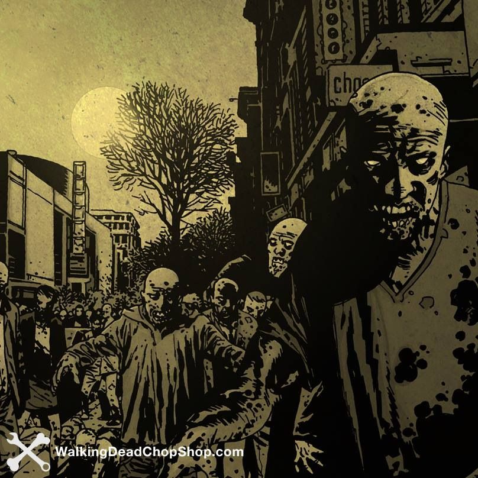

THE
WALKING DEAD
Bem-vindo ao universo de The Walking Dead, onde sobreviver é apenas o começo. Em um mundo dominado pelos mortos-vivos, cada escolha pode significar a diferença entre a vida e a morte. Aqui, você poderá explorar os personagens marcantes, os grupos de sobreviventes, os principais acontecimentos e os momentos que fizeram parte dessa jornada. Prepare-se para conhecer mais sobre esse universo repleto de desafios, perdas, alianças e reviravoltas, onde o maior perigo nem sempre vem dos mortos, mas também dos próprios vivos.